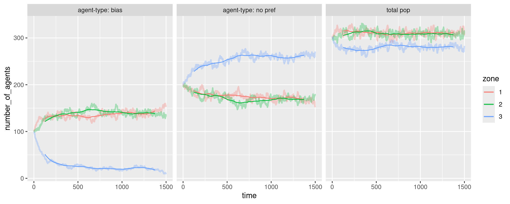
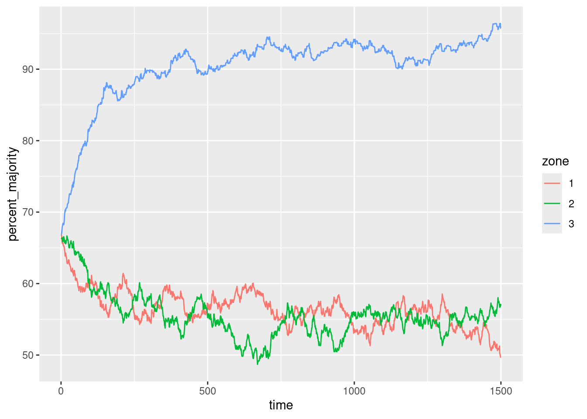
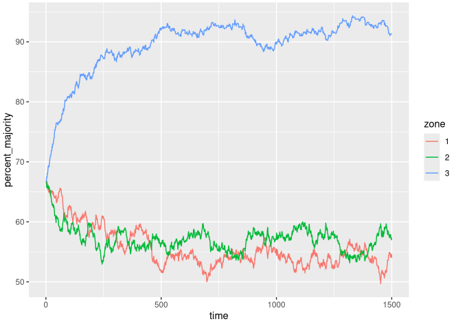

library(plyr)
library(reshape2)
library(ggplot2)
library(zoo)#For running meansPreamble
One of the parts of my new job (both here and here) is a project examining how migration and a host of other spatial-economic and social things interact. This is awesome news for me: the movement of people (and its interaction with the spatial economy) was both essential to the PhD and a mirror to the stuff in GRIT.
I’ve got a long long way to go with the topic - some of the best social science has been done in this area for a long time, I’ve got a lot of catching up to do. So this post is just an initial, probably hugely misinformed, maybe plain dumb, ramble - and an excuse to build a little agent-based model in R (not sure I’ll be doing the latter again - back to Java and exporting result to R - but it was fun!)
My initial hook into this post was hearing the idea of white flight (or ‘native flight’ too) in some presentations. The focus was specifically about how immigrants external to the UK might be causing this. With an agent-modelling head on, it feels like you could get something that has its characteristics while actually being little more than random movement plus spatial economics. And, especially, that one has to be very careful to separate out the driving economic forces from the people themselves. That might end up meaning exactly the same thing, but…
To put it another way: I’ve got this, still currently very vague, sense that you could find statistically significant patterns just by arbitrarily labelling one bunch of people as ‘x’ and another ‘y’. Somewhat trivially obviously, you wouldn’t be able to do any quant work if those groups hadn’t been labelled differently - but I want to know if you arbitrarily labelled a random sample, perhaps, how would you tell the effects apart?
A simple thought experiment to illustrate the point. Imagine a variation on Maxwell’s Demon: a box with two halves, joined by a gap that, over time, produces a maximal entropy state, perfectly mixed. Initially all molecules are identical, but the demon has the power to arbitrarily deem 50% of the right-hand box as ‘blue’ and the rest across both boxes ‘red’.
Suddenly, rather than an entirely boring statistical evenness, the red left are being invaded by blues (coming over ere with their entropy-maximising randomness). One could show this by measuring the percentage of red vs blue in the left box as it rapidly dropped (which I do below, with a few additions to this thought experiment). But nothing has changed apart from the labelling - the same particle motion is taking place.
It’s a dumb idea but it gets the point across: there’s a labelling effect that could, in theory, mislead if the underlying process involved is not accounted for. Or alternatively, it’s not misleading at all if that designation of different groups is, in itself, a real feature of social life. Which it obviously is in some ways - but it’s still a tricksy idea. (Compare with Akala talking about the, seemingly entirely arbitrary, difference between ‘immigrants’ and ‘ex-pats’.)
Just to re-iterate, none of this is probably relevant to the work that triggered this thought. This is just me working through my intuition. I’m guessing it’s easy enough to distinguish area effects for places with the same overall characteristics/migration-flows but separate out the effect of differing groups. But let’s just carry on with the thought process anyhoo.
Coupla lit bits
There are a couple of facts from my first head-butt of the literature that jump out. First-up are the basic demographic differences involved. Not only do migrants from outside the UK tend to be much younger, but there’s a difference in internal migration rates between ethnic groups too (though obv, best not to conflate ethnicity and external migration!) This is analysed in Finney/Simpson 2008. Their key finding is that, once demographics are controlled for, ethnic groups in the UK -
do not have a significantly different migration rate from the White Briton group when group composition is accounted for. [76]
They also mention, in passing, that:
accommodation that is privately rented is occupied by residents that are almost twice as likely to have migrated in the past year than the average resident.[72]
And vice-versa - home-owners are much less likely to move, a finding that’s consistent across all groups. The Fotheringham et al 2004 paper - a stupendous piece of work - looks just at out-migration rates (between 98 ‘family health service areas’) in England and Wales. They’d found -
a strong positive relationship between out-migration rates and the proportion of nonwhite population in an FHSA…
And, mechanism-wise, they saw two possibilities:
The generally positive relationship could be caused by the white population leaving areas of mixed race or by nonwhite populations having higher migration rates.
Finney/Simpson’s work suggests the latter - but that this is due to demographic differences. Also, Among the bzillion dynamics Fotheringham et al analyse, one that jumped out at me was:
Higher out-migration rates are associated with areas of high employment growth, suggesting a high turnover effect operates in such areas. That is, in-migration volumes will be high into such areas because of high employment growth, but recent migrants tend to be highly mobile and out-migration rates are therefore also likely to be high. [1666]
So we’ve got this high churn going on in economically attractive places - which also connects to the housing market, of course. More property-owning pushes an area away from this high-churn. And that could go both ways, couldn’t it? High turnover, from a Putnam perspective, could undermine some of social-capital formation and knock on to house prices. Those areas, if generally younger, might also be more urban, less desirable by older groups looking for family homes.
Or prices could be pushed up if people are piling in - but you can see equilibrium pressures at work as out-migration rates increase too.
Model pre-amble
Which segues me nicely into to the following silly little model. I’ve got a very long way to fully mapping out the dynamics involved but, here, I just wanted to get started with something very basic. This post is also an attempt to persuade R to do a simple little agent/stochastic model. I’ll wibble a bit at the end about the coding experience…
So this is a sorta-ABM with zero-intelligence agents making the simplest probabilistic moves. It looks like this:
- Nine hundred agents initially split evenly between three zones.
- All agents have the same 1 in 100 chance of deciding to move on every timestep…
- Though that 1 in 100 chance is weighted slightly by the population of their current zone. If it’s more than an even proportion of the total population, their chance of wanting to move is increased slightly, and vice versa.
- Once an agent decides to move, they have a different function to choose where to move.
- For two-thirds of them, they have no preference - they’ll decide to either stay, or move to one of the other two, with equal probability (but weighted by population).
- One third of the agents, however, will have a preference for two of the zones (or a preference against one of them - same thing). This could be slight or large, depending on their preference set.
A few things to note before getting to the code:
The 1/3 agents are arbitrary - it’s 1 in 3 in each zone initially but it doesn’t matter. This is one aspect of the way the problem is thought about that I’d like to be sure I’m thinking straight on - if one (a) marks out a group of people as a specific sub-group and then (b) examine how that sub-group’s flows affect others’, might the result be an artifact of the labelling itself?
I haven’t dug into the original pieces of research in enough depth to make any sweeping statements. So, just to be clear, this piece isn’t in any way meant as a criticism of anyone else’s approach - it’s entirely just me thinking through some of the most trivially basic mechanisms that might be involved.
The population-weighted probability of moving I’m using is a way to push zone numbers back to equilibrium. It could stand in for any kind of pressure to move that agents might come under, from house prices to environment. I’m also aware there are plenty of mechanisms, in reality, that can make larger zones more attractive, not less, e.g. through Krugmanesque increasing returns feedbacks. The assumption here is that all those forces balance to a net-negative response to higher population.
Since I haven’t posted one of these little models for a while, I should point out that, not only do I think this kind of simple model is useful, I believe they can be extremely powerful and criticisms about lack of realism miss the point. See PhD chapter 3. But then I would say that, I suppose.
Right, that’s a lot of wiffle. On to…
The actual code. 1: Set up.
‘Store’ just stores each timestep’s data for outputting once the model’s run:
#Store of time series data (to match how table gets converted to dataframe for rbinding)
#Time is iteration
store <- data.frame(zone = as.integer(),
agent_type = as.integer(),
number_of_agents = as.integer(),
time = as.integer())Then set per-zone population, each agent’s base probability of moving and the number of timesteps (though note below, I’ve hard-coded stuff that only works with 300 agents per zone… oops).
#population per zone
#(so they can be evenly distributed to zones to start with)
n = 300
#probability of an agent wanting to move on each turn
#1 in 100
p = 0.01
#iterations
ites = 1500As mentioned, there are two agent types: two-thirds of agents don’t care where they move, if they’ve decided to move. The other third have a preference. These two preferences are set by giving each agent type its own vector for selecting a zone to move to.
This was one easy way of defining how a sub-group can be biased towards two zones: if, as here, their choice vector is 10 / 10 / 1, they only have a 1 in 21 chance of deciding to move to zone 3. (Note the range of other preferences for ‘bias’ in the comments.)
#even probability of choosing any zone (including my own)
even <- c(rep(1,each = 10),rep(2,each = 10),rep(3,each = 10))
#preference for zones one and two
#Slight preference
# bias <- c(rep(1,each = 10),rep(2,each = 10),rep(3,each = 8))
#Weaker preference
# bias <- c(rep(1,each = 10),rep(2,each = 10),rep(3,each = 3))
#Even weaker preference for one zone (thus stronger for other two)
bias <- c(rep(1,each = 10),rep(2,each = 10),rep(3,each = 1))
#Won't ever choose 3 (useful for testing assignment works)
# bias <- c(rep(1,each = 10),rep(2,each = 10)) Each ‘agent’ is just a row in a dataframe. Each row has an agent’s current zone, whether it’s going to move this turn and a reference to its preference (!). So it’s here that we set 2/3s of agents to ‘don’t care which zone’ (even) and 1/3 to ‘bias’.
A probability column gets added further below that determines their first decision - ‘shall I move this turn?’ Like most agent models, this is a little bit markov-chainy. I think.
#THE AGENTS:
#Keep them all in a single long dataframe
#assign agents to zones initially evenly
#One row per agent
#'moving' is flag: am I moving this turn?
#'prob': flag for which zone probability to use.
#0 is even; 1 is biased
#Set a third of agents to prefer zones 1 and 2.
#Distribute them evenly between zones to start with
agents <- data.frame(zone = rep(1:3,each = n),
moving = 0,
prob = rep(c(0,0,1),times = n))#codes 2/3 majorityJust to show exactly what that creates: Zones 1 to 3 each have 300 agents in, and there are 200 who don’t care where they move to (0) and a hundred (1) that will use the ‘bias’ probability.
table(agents$zone, agents$prob)
0 1
1 200 100
2 200 100
3 200 100Each timestep produces a ‘result’ table that summarises the number and type of agent per zone. Each of these ‘results’ goes into the ‘store’ dataframe for graphing later. But we need an initial ‘result’ to start with, as it’s used to work out how to weight moving probability on the next timestep - but the first timestep needs one too! So this one is just hard-coded to match the agent table above. I should probably work out how not to hard-code this. I’m not going to right now. So!
#WARNING: hard-coding the numbers for this first set of values based on 900 agents in total
#and a 2/3 majority
#So this matches store structure and initial agent state:
result <- data.frame(zone = rep(1:3, times = 2),
agent_type = rep(0:1,each = 3),
number_of_agents = c(rep(200,each=3),rep(100,each=3)),
time = 0)And that’s everything set up. On to ->
2: Running the model…
Here’s the model for-loop itself:
###########
# RUNRUNRUN
for (i in 1:ites) {
#1. Weight probability of moving by population in each zone
#Find zone population for this timestep
zonepop <- aggregate(result$number_of_agents, by=list(result$zone),sum)
#Sensible names for following the logic...
colnames(zonepop) <- c('zone','population')
#Weight probability of moving by population difference from even
# zonepop$newprob <- (zonepop$x/(n)) * p
#raise to power to make a larger effect (but 1 stays 1)
zonepop$newprob <- ((zonepop$population/(n))^4) * p
#drop any previous newprob column from agents
agents$newprob <- NULL
#Merge the probability for each zone into the agents
#zonepop columns one and three is just 'zone' (for matching)
#and the new probability of moving
agents <- merge(agents, zonepop[,c(1,3)], by = 'zone')This first section weights each agent’s probability of moving to the size of the zone they’re in. We know the populations are all even on the first step, so the initial ‘result’ above just uses the base probability, but on future steps it’s higher if more crowded, lower if less.
Note that the probability-calculating line raises the ‘zone population’/‘agent number’ ratio to the power of 4. This makes any deviation from an even population have an increasingly strong effect on agent’s likelihood of deciding to move (or stay, if the population’s lower than even.)
And then this just returns 1 if I’m deciding to move on this timestep:
#2. Using weighted prob... Am I moving this turn?
agents$moving <- rbinom(nrow(agents), 1 , agents$newprob)You can see this produces roughly a 1 in 100 chance of each agent moving…
table(rbinom(nrow(agents), 1 , agents$newprob))
0 1
892 8 But if population is higher in all zones (which it can’t be in the model, but just to illustrate). 10 times the current probability of 0.01 is about 1 in 10 deciding to move:
table(rbinom(nrow(agents), 1 , rep(10 * p,nrow(agents))))
0 1
823 77 table(rbinom(nrow(agents), 1 , rep(10 * p,nrow(agents))))
0 1
803 97 table(rbinom(nrow(agents), 1 , rep(10 * p,nrow(agents))))
0 1
813 87 And if lower in all zones, agents are more likely to stay put:
table(rbinom(nrow(agents), 1 , rep(0.1 * p,nrow(agents))))
0 1
898 2 table(rbinom(nrow(agents), 1 , rep(0.1 * p,nrow(agents))))
0 1
899 1 table(rbinom(nrow(agents), 1 , rep(0.1 * p,nrow(agents))))
0
900 For those who are moving, in this next step, they decide where to go. The fiddly part here are the two selections from the ‘even’ and ‘bias’ vectors that tell agents which zone they’re moving to. To explain it as much for my own later sanity as anything, here’s what’s going on. We’re just selecting a random index from each of them. In the case of ‘even’, 1,2 and 3 have the same chance of being chosen (as can be seen if we whack the number of random selections right up). Whereas ‘bias’ ends up telling about a tenth the number of biased agents to move to #3:
table(even[floor(runif(n = 1000000, min=1, max=length(even)+1))])
1 2 3
333529 332695 333776 table(bias[floor(runif(n = 1000000, min=1, max=length(bias)+1))])
1 2 3
475498 477214 47288 In the zone selection itself, each random selection is the same length as agents of that type. As the comments note, I’m a little amazed this works - I’m not really clear on how that random vector can be created and then, via an ifelse, be assigned to the correct index… oh well, it works!
#3. If moving, where to?
agents$zone <- ifelse(agents$moving == 1,#If I decided to move...
ifelse(agents$prob==0,#Move based on my preference of zone (or no preference)
even[floor(runif(n = nrow(agents[agents$prob==0,]), min=1, max=length(even)+1))],
bias[floor(runif(n = nrow(agents[agents$prob==1,]), min=1, max=length(bias)+1))]),
agents$zone
)
#Explanation for the zone selection above, since I'll probably forget.
#Choose a random position from my (either even or biased/weighted) array of zone choices
#Passing in a uniform random pick from each of the choice arrays
#Of the correct length (the nrow subset)
#It's still some form of witchcraft though - how does R know to distribute
#the result to the correct index via the ifelse???The result for this timestep is then stuck into the store for output later (also adding in a column to mark the current iteration). Converting a table to a data.frame reshapes it so it’s the right orientation to bind to the ongoing ‘store’ of results:
#GET THE RESULT OF THIS ITERATION AND STORE IT
#automatically reshapes, it turns out
#so zone is in first column, zone pref type in second
result <- as.data.frame(table(agents$zone,agents$prob))
#Rename those fields to something sensible
colnames(result) <- c('zone','agent_type','number_of_agents')
#mark what iteration it is
result$time <- i
#Then add this step to the end of the data store
store <- rbind(store, result)
}#end forDisplay results
So that’s the results found. Now to show ’em. First-up, let’s add some extra data for total population per zone on each timestep:
#Find "total population in each zone at each iteration"
#Will be added as an extra bunch of rows to the output dataframe
#To fit the 'long' format ggplot wants
totpop_perzone_timestep <- aggregate(store$number_of_agents, by=list(store$zone, store$time), sum)
colnames(totpop_perzone_timestep) <- c("zone","time","number_of_agents")
#Make a new column for faceting the data.
#This one will be total population per zone
totpop_perzone_timestep$facet <- 'total pop'
#Relabel store's two agent types so each can have its own facet
store$facet <- 'agent-type: no pref'
store$facet[store$agent_type==1] <- 'agent-type: bias'
#Drop old agent_type column
store$agent_type <- NULL
#Stick 'em together in a new store
store2 <- rbind(store,totpop_perzone_timestep)Now the data’s ready - just one nice little addition by combining ddply and rollmean from the zoo package to give us a running mean. This can help show the trend over time in a simple way. This sort of thing is really satisfying in R, when it works. One line! So ddply is applying the running mean for the number of agents in each zone/facet sub-group:
#Running mean...
smood <- ddply(store2, .(zone,facet), mutate,
rollingmean = rollmean(number_of_agents,250,fill = list(NA, NULL, NA)))
output <- ggplot(smood) +
geom_line(data = smood, aes(x = time, y = number_of_agents, colour = zone), alpha = 0.3, size = 1) +
geom_line(data = smood, aes(x = time, y = rollingmean, colour = zone)) +
facet_wrap(~facet)Warning: Using `size` aesthetic for lines was deprecated in ggplot2 3.4.0.
ℹ Please use `linewidth` instead.outputWarning: Removed 747 rows containing missing values or values outside the scale range
(`geom_line()`).
And there’s the basic result, then:
- The ‘bias’ agents (left-hand plot) move more to zones 1 and 2, as you’d expect.
- The ‘even’ agents in the middle plot, who (all other things being equal) don’t care where they go, end up having a larger number in zone 3 as they respond to the pressure of increasing population. Remember, that pressure is only coming from one-third of the agents.
- Overall, zones 1 and 2 end up with higher total populations because of the minority groups’ preferences.
I’ve not tested whether/at what point the ‘bias’ agents’ preference function wouldn’t outweigh the population push but, here at least, their large preference for those two zones wins out.
To look at it from another perspective, the following re-jigs the data so we have the proportion of ‘even’ vs ‘bias’ agents in each zone:
#Different output for looking at the proportion change of the two groups in each zone
#Use the original 'store' for this
#Convert wide so that each agent type has its own column
#To make finding proportion per zone easier
proportions <- dcast(store, zone+time ~ facet, value.var = "number_of_agents")
#Proportion of majority as percentage of whole
proportions$percent_majority <- (proportions$`agent-type: no pref`/
(proportions$`agent-type: bias`+proportions$`agent-type: no pref`))*100
output <- ggplot(proportions, aes(x = time, y = percent_majority, colour = zone)) +
geom_line()
output
Zones 1 and 2 see a lot of ‘even-agent flight’, it seems. Which makes perfect sense given the trivially simple dynamic: it’s nothing more than a response to some equilibrium pressure as one group who prefers a zone (for whatever reason) decides to move there.
All agents, regardless of type, are affected in the same way by population pressure: their decision to move is the same. They only differ in where they prefer to move to. Many of the ‘bias’ group prefer to move somewhere in the same zone or a similar one.
I’m really labouring the point now, I know, but… the point being, assigning causality here is a little murky. Without the ‘bias’ groups’ preference, the ‘evens’ wouldn’t end up dominating zone 3.
This is, in a way, just a slightly different take on the Schelling segregation dynamic, except that it’s not about people’s preferences for any particular type of neighbour, but rather some people’s preferences for particular places, and what the knock-on effects of that could be.
Random coding wibble
So that’s enough ill-informed migration wiffle. On to coding wibble. That was in some ways amazingly easy to set up, and R does some things just beautifully. The tricky part: I went away for a month and then it took me about two hours of staring to figure out how it worked. I fixed that by naming variables sensibly. Phew.
As far as I was able to figure, there was no way to circumvent the main for-loop and subsequently it’s pretty slow. “As far as I was able to figure” isn’t very much, so perhaps there’s a way of making this more R-native - though I suspect the kind of non-ergodic timestep processes that drive ABM might not be R’s forte. Though though: the slow part is actually the rbinding and table-making, so there may be another way.
On the plus side, I can write it up like this in RMarkdown… though perhaps Python will let me do that too, if I can get round to trying it. And my first thought on coming back to the model after a break: if this were Java, it would be perhaps make a lot more sense right now, and running faster. OOP and ABM go together: it’s very easy to see what the agents are. Here, pleasing in its brevity but challenging to keep all the working parts in mind.
